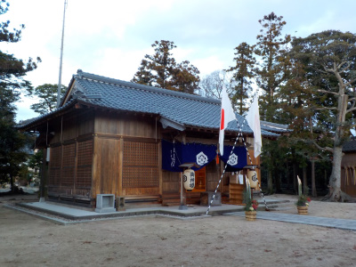
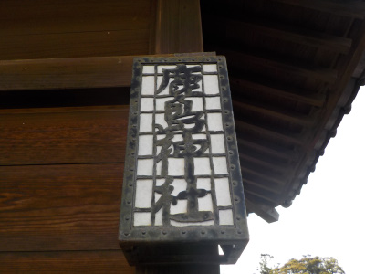
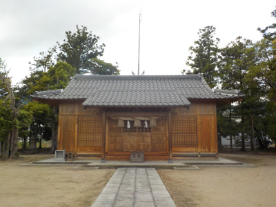
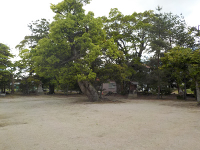
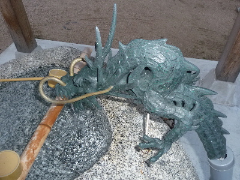
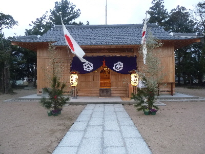
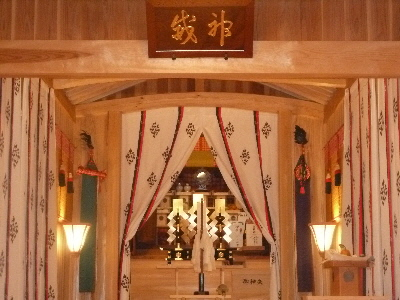
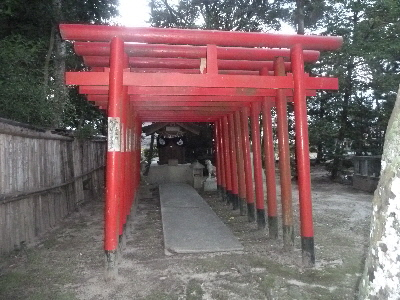

鹿島神社に行きました。
2024/01/01

地震ありましたね。
もうないといいんですが。
島根県出雲市武志町673番地
2024/01/01

地震ありましたね。
もうないといいんですが。
2023/05/14

この表札みたいなのって何て言うんでしょう？行燈みたいな灯篭にたいな、提灯みたいな。
かっこいいです。こうゆうの欲しいと思いましたが、置場はないですね。

神社には避雷針がありました。雷が落ちやすいエリアってことなんでしょうね。

境内には祠など色々あり、ちょっと奥の方には行きにくい雰囲気がしました。
2018/01/02
近くを通ったので、普段行かない神社ですがお詣りしました。
遷宮されて１年くらいしか経っていないので、とても綺麗です。

手水舎の水が出るところが龍になっていました。
龍がカッコイイです。こうゆうのが近頃はあるんですね。

お正月なので戸が開けてありました。

中はこんな感じです。
新しので、清々しい気分になれました。
今日は他の神社も行ったんですが、何か所行っても場所が違って最初のお詣りは初詣って言うのかな？
今年は初詣は何か所行けるかな。

稲荷さんもありました。